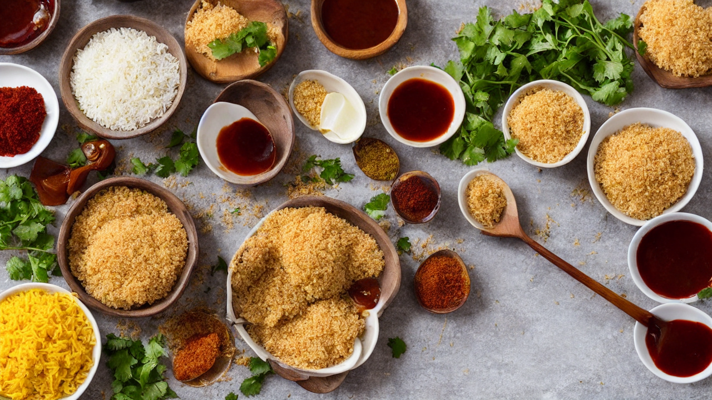
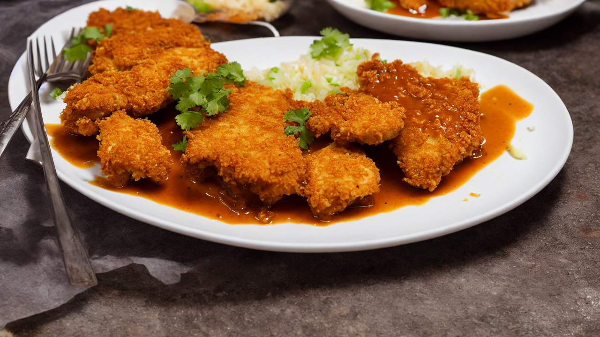

Crispy Chicken Katsu Curry | Japanese Comfort Food Recipe
Discover how to make crispy chicken katsu curry at home! This fusion dish combines Japanese fried chicken with rich, spiced curry. Perfect for fans of bold flavors and comforting meals. Watch now for an easy, delicious recipe!
Ingredients
- ing your ingredients: chicken breast
- panko breadcrumbs
- curry powder
- soy sauce
- your favorite curry paste
- Keep it simple and flavorful!
Instructions
Welcome to today’s recipe! Crispy chicken katsu curry is a flavor-packed fusion that’s crispy, savory, and perfectly spiced. Let’s make it together!

Start by gathering your ingredients: chicken breast, panko breadcrumbs, curry powder, soy sauce, and your favorite curry paste. Keep it simple and flavorful!
Season chicken with soy sauce and curry powder, then coat in panko breadcrumbs for that irresistible crunch. Make sure every bite is golden and crispy!
Heat oil in a pan and fry chicken until golden and crispy. Flip carefully to avoid breaking the crust—this is where the magic happens!
In the same pan, sauté onions and garlic until fragrant, then add curry paste and coconut milk. Stir until the sauce thickens and coats the chicken.

Toss the fried chicken in the creamy curry sauce, ensuring it’s evenly coated. Let it simmer for 5 minutes to meld flavors and soften the chicken.
Garnish with green onions and sesame seeds for a fresh finish. Serve hot with rice for a complete, satisfying meal that’s sure to impress!
Enjoy your crispy chicken katsu curry! Don’t forget to like, comment, and subscribe for more delicious recipes. See you in the next video!
Recommended Kitchen Essentials
Every great recipe starts with great tools. Here are our top picks to make cooking easier and more enjoyable:
Support Quick Bites Kitchen — When you purchase through our links, we may earn a small commission at no extra cost to you. This helps us keep creating free recipes for everyone. Thank you!